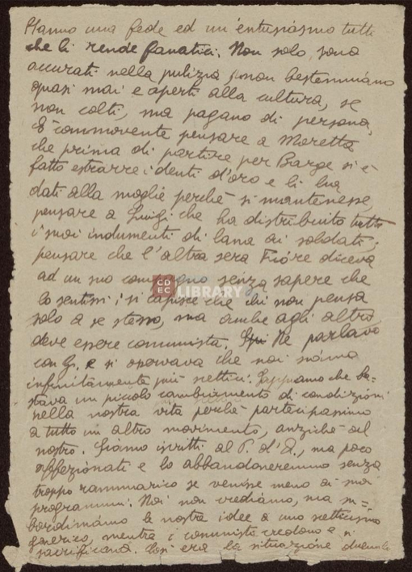
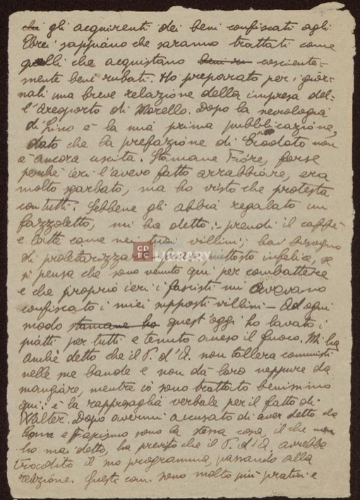

Tramite i pulsanti presenti sopra ogni pagina, potranno essere visualizzati i vari
elementi come mostrato nella leggenda.
Passando il puntatore sopra i dettagli delle immagini, si potrà:
- visualizzare a quale categoria fa parte, scritta nel formato #pg**_type*
- visualizzare le iniziali di persona, associazione o codice catastale
- Deleted (#pg**_d*): mostra gli elementi cancellati e non visibili nel testo. Esempio: Lui - Lui
- Added (#pg**_a*): mostra gli elementi aggiunti all'interno del testo. Esempio: più scettici - più scettici
- Highlighted (#pg**_hi*): rende in grassetto laddove lo è nel testo. Esempio: Non - Non
- Unclear (#pg**_u*): applicherà un effetto sbiadito agli elementi non leggibili perché sbiaditi o sovrascritti. Esempio: Sappiamo - Sappiamo
- Abbreviation (#pg**_c*): sostituirà il termine scritto per esteso con l'abbreviazione nel testo. Esempio: Partito d'Azione - P.d'A.
- Correction (#pg**_c*): sostituirà il termine scritto correttamente con la forma originale. Esempio: Murello- Morello
- Substitution (#pg**_sub*): sostituirà il termine finale con ciò che era scritto inizialmente. Esempio: aggiunse - osservò
- Gap (#pg**_gap*): inserirà degli asterischi dove è presente un elemento totalmente illegibile. Esempio: elemento non leggibile - ***
- FloatingText (#pg**_ft*): evidenzierà il testo aggiunto lateralmente. Esempio: Luigi osservò - Luigi osservò
Pagina 34

Hanno una fede ed un entusiasmo tutti
che li rende fanatici. Non solo , sono
accurati nella pulizia, non bestemmiano
quasi mai e sono aperti alla cultura, se
non colti, ma pagano di persona.
È commovente pensare a Moretta
che prima di partire per Barge si è
fatto estrarre i denti d'oro e li ha
dati alla moglie perché si mantenesse,
pensare a Luigi che ha distribuito tutti
i suoi indumenti di lana ai soldati;
pensare che l'altra sera Fiore diceva
ad un suo compagno senza sapere che
lo sentissi: si capisce che chi non pensa
solo a se stesso, ma anche agli altri,
deve essere comunista. Ne parlavo
con Giorgio e si osservava che noi siamo
infinitamente più scettici. Sappiamo che ba=
stava un piccolo cambiamento di condizioni
nella nostra vita perché partecipassimo
a tutto un altro movimento, anziché al
nostro. Siamo iscritti al Partito d'Azione, ma poco
affezionati e lo abbandoneremmo senza
troppo rammarico se venisse meno ai suoi
programmi. Noi non crediamo, ma su=
bordiniamo le nostre idee a uno scetticismo
generico, mentre i comunisti credono e si
sacrificano. Così era la situazione duemila
Pagina 35

anni fa tra filosofi e cristiani. L'assurdità
della superstizione pagana, le ingiustizie della
società apparivano a Marco Aurelio, a Lu=
ciano, ad Apollonio di Tiana, a Giuliano
come a Tertulliano, ad Agostino, ai martiri
del Circo. La mia mentalità è come
quella degli eredi della lunga tradizione
letteraria e storica, mentre i comunisti sono come i
Cristiani; conoscono la folla da cui pro=
vengono, sono fanatici, talvolta urtanti e
ridicoli, degni di ogni rispetto, per loro le
esigenze della società sono reali e sofferte,
non astrattamente conosciute. È difficile
ragionare con loro perché sono intolleranti,
ma quando parlano hanno una grande
forza di convinzione, un grande calore,
rafforzato dall'esempio. Si pensa che
la storia futura non possa non essere
per loro. L'altro giorno si parlava
con Gina del problema femminile e citai
Grazia Deledda come una grande scrittrice:
e mi rispose: <<non mi piace, perché non
si occupa della questione sociale>>. Ieri sera
si parlava con Fiore dei vegetariani Luigi osservò ragionevolmente che troppe erano le sofferenze degli uomini per pensare a quelle delle bestie, ma e Fiore
aggiunse: <<La natura ha creato certe
bestie perché l'uomo le mangi>>. Per stuzzicarlo
nel suo probabile ateismo, ribattei: allora credi in Dio
credi in una natura coscientemente creante,
cioè in Dio>> e Fiore si offese, come se suppor=
re che creda in Dio sia calunniarlo. Giorgio
ed io lo abbiamo pregato di far pubbli=
care sui giornali del Centro Nazionale che
Pagina 36

gli acquirenti dei beni confiscati agli
Ebrei sappiano che saranno trattati come
quelli che acquistano cosciente=
mente beni rubati. Ho preparato per i gior=
nali una breve relazione della impresa del=
l'Aeroporto di Murello. Dopo la necrologia
di Lino è la mia prima pubblicazione,
dato che la prefazione di Erodoto non
è ancora uscita. Stamane Fiore, forse
perché ieri l'avevo fatto arrabbiare, era
molto sgarbato, ma ho visto che protesta
con tutti. Sebbene gli abbia regalato un
fazzoletto, mi ha detto: - prendi il caffè
e latte come nei tuoi villini; hai bisogno
di proletarizzarti - frase piuttosto infelice, se
si pensa che sono venuto qui per combattere
e che proprio ieri i fascisti mi avevano
confiscato i miei supposti villini. Ad ogni
modo quest'oggi ho lavato i
piatti per tutti e tenuto acceso il fuoco. Mi ha
anche detto che il Partito d'Azione non tollera comunisti
nelle sue bande e non dà loro neppure da
mangiare, mentre io sono trattato benissimo
qui: è la rappresaglia verbale per il fatto di
Valter. Dopo avermi accusato di aver detto che
Comunismo e Fascismo sono la stessa cosa, il che non
ho mai detto, ha previsto che il Partito d'Azione avrebbe
tradito il suo programma, passando alla
reazione. Questi comunisti sono molto più pratici e